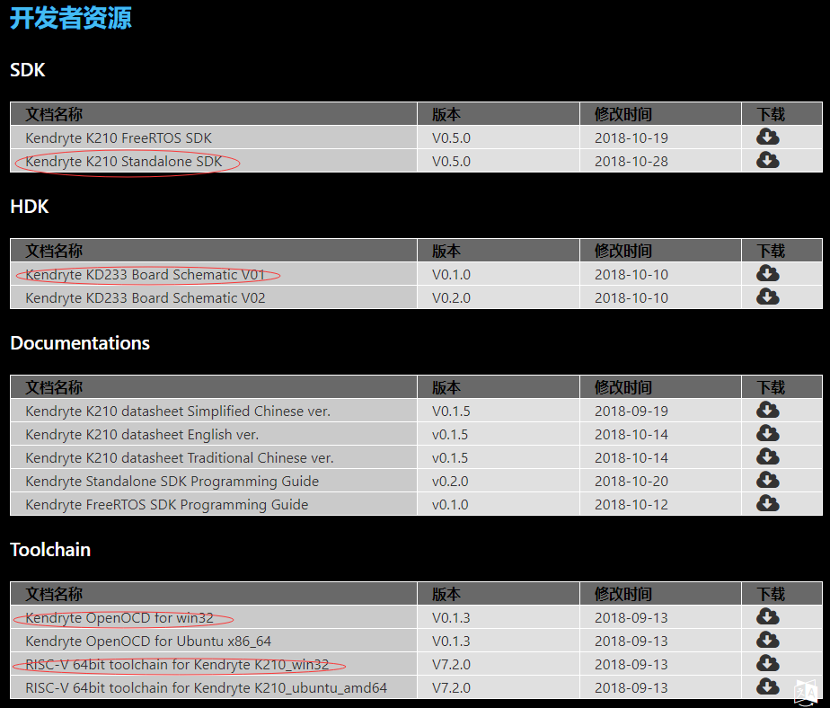
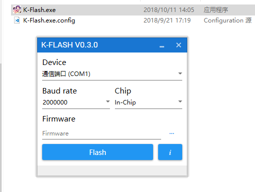
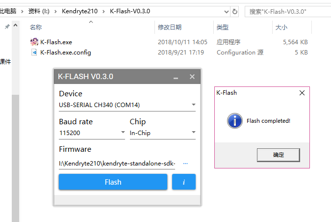
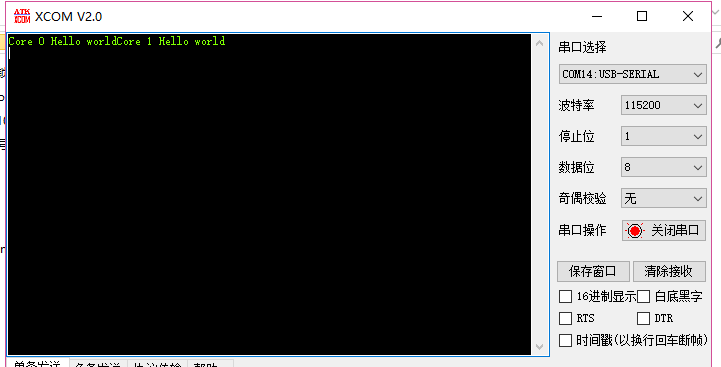

k210环境搭建_Windows
边缘计算
我们下载以下文件:  还要下载烧录软件! 
安装交叉编译器
之前我们下载了RISC-V 64bit toolchain for Kendryte K210_win32交叉编译器。现在我们首先需要对他进行安装。
解压
Toolchain我将交叉编译器放到了
I:\Kendryte210\kendryte-toolchain.设置环境变量
打开系统的环境变量并将添加如下:

开始编译
首先解压sdk
我把sdk解压到了
I:\Kendryte210\kendryte-standalone-sdk-0.5.0安装Cmake
我们要编译,首先得安装
Cmake.去cmake官网下载安装.如果网速不给力可以去这里下载. 记得按照时选择添加到系统路径生成Makefile
在sdk中打开终端powershell运行：
PS I:\Kendryte210\kendryte-standalone-sdk-0.5.0> mkdir build 目录: I:\Kendryte210\kendryte-standalone-sdk-0.5.0 Mode LastWriteTime Length Name ---- ------------- ------ ---- d----- 2018/11/1 15:38 build PS I:\Kendryte210\kendryte-standalone-sdk-0.5.0> cd build PS I:\Kendryte210\kendryte-standalone-sdk-0.5.0\build> cmake .. -DPROJ=hello_world -G "MinGW Makefiles" PROJ = hello_world -- Check for RISCV toolchain ... -- Using I:/Kendryte210/kendryte-toolchain/bin RISCV toolchain -- The C compiler identification is GNU 7.2.0 -- The CXX compiler identification is GNU 7.2.0 -- Detecting C compiler ABI info -- Detecting C compiler ABI info - done -- Detecting C compile features -- Detecting C compile features - done -- Detecting CXX compiler ABI info -- Detecting CXX compiler ABI info - done -- Detecting CXX compile features -- Detecting CXX compile features - done SOURCE_FILES=I:/Kendryte210/kendryte-standalone-sdk-0.5.0/src/hello_world/main.c Project: hello_world LIST_FILE=I:/Kendryte210/kendryte-standalone-sdk-0.5.0/cmake/executable.cmake TOOLCHAIN=I:/Kendryte210/kendryte-toolchain/bin KENDRYTE_IDE= BUILDING_SDK=yes CMAKE_BUILD_TYPE=Debug CMAKE_C_COMPILER=I:/Kendryte210/kendryte-toolchain/bin/riscv64-unknown-elf-gcc.exe CMAKE_CXX_COMPILER=I:/Kendryte210/kendryte-toolchain/bin/riscv64-unknown-elf-g++.exe CMAKE_LINKER=I:/Kendryte210/kendryte-toolchain/bin/riscv64-unknown-elf-ld.exe CMAKE_OBJCOPY=I:/Kendryte210/kendryte-toolchain/bin/riscv64-unknown-elf-objcopy.exe CMAKE_OBJDUMP=I:/Kendryte210/kendryte-toolchain/bin/riscv64-unknown-elf-objdump.exe CMAKE_MAKE_PROGRAM=I:/Kendryte210/kendryte-toolchain/bin/mingw32-make.exe CMAKE_C_FLAGS= -mcmodel=medany -fno-common -ffunction-sections -fdata-sections -fstrict-volatile-bitfields -fno-zero-initialized-in-bss -Os -ggdb -std=gnu11 -Wno-pointer-to-int-cast -Wall -Werror=all -Wno-error=unused-function -Wno-error=unused-but-set-variable -Wno-error=unused-variable -Wno-error=deprecated-declarations -Wextra -Werror=frame-larger-than=65536 -Wno-unused-parameter -Wno-sign-compare -Wno-error=missing-braces -Wno-error=return-type -Wno-error=pointer-sign -Wno-missing-braces -Wno-strict-aliasing -Wno-implicit-fallthrough -Wno-missing-field-initializers -Wno-old-style-declaration CMAKE_CXX_FLAGS= -mcmodel=medany -fno-common -ffunction-sections -fdata-sections -fstrict-volatile-bitfields -fno-zero-initialized-in-bss -Os -ggdb -std=gnu++17 -Wall -Werror=all -Wno-error=unused-function -Wno-error=unused-but-set-variable -Wno-error=unused-variable -Wno-error=deprecated-declarations -Wextra -Werror=frame-larger-than=65536 -Wno-unused-parameter -Wno-sign-compare -Wno-error=missing-braces -Wno-error=return-type -Wno-error=pointer-sign -Wno-missing-braces -Wno-strict-aliasing -Wno-implicit-fallthrough -Wno-missing-field-initializers LDFLAGS= -nostartfiles -static -Wl,--gc-sections -Wl,-static -Wl,--start-group -Wl,--whole-archive -Wl,--no-whole-archive -Wl,--end-group -Wl,-EL -T I:/Kendryte210/kendryte-standalone-sdk-0.5.0/lds/kendryte.ld CMAKE_BINARY_DIR=I:/Kendryte210/kendryte-standalone-sdk-0.5.0/build Makefile created. -- Configuring done -- Generating done -- Build files have been written to: I:/Kendryte210/kendryte-standalone-sdk-0.5.0/build可以看到build下已经有几个文件生成.

编译工程
依旧是在那个目录下，执行
mingw32-make命令。PS I:\Kendryte210\kendryte-standalone-sdk-0.5.0\build> mingw32-make Scanning dependencies of target kendryte [ 2%] Building C object lib/CMakeFiles/kendryte.dir/bsp/entry.c.obj [ 5%] Building C object lib/CMakeFiles/kendryte.dir/bsp/entry_user.c.obj [ 8%] Building C object lib/CMakeFiles/kendryte.dir/bsp/interrupt.c.obj [ 11%] Building C object lib/CMakeFiles/kendryte.dir/bsp/printf.c.obj [ 14%] Building C object lib/CMakeFiles/kendryte.dir/bsp/sleep.c.obj [ 17%] Building C object lib/CMakeFiles/kendryte.dir/bsp/syscalls.c.obj [ 20%] Building C object lib/CMakeFiles/kendryte.dir/drivers/aes.c.obj [ 23%] Building C object lib/CMakeFiles/kendryte.dir/drivers/clint.c.obj [ 26%] Building C object lib/CMakeFiles/kendryte.dir/drivers/common.c.obj [ 29%] Building C object lib/CMakeFiles/kendryte.dir/drivers/dmac.c.obj [ 32%] Building C object lib/CMakeFiles/kendryte.dir/drivers/dvp.c.obj [ 35%] Building C object lib/CMakeFiles/kendryte.dir/drivers/fft.c.obj [ 38%] Building C object lib/CMakeFiles/kendryte.dir/drivers/fpioa.c.obj [ 41%] Building C object lib/CMakeFiles/kendryte.dir/drivers/gpio.c.obj [ 44%] Building C object lib/CMakeFiles/kendryte.dir/drivers/gpiohs.c.obj [ 47%] Building C object lib/CMakeFiles/kendryte.dir/drivers/i2c.c.obj [ 50%] Building C object lib/CMakeFiles/kendryte.dir/drivers/i2s.c.obj [ 52%] Building C object lib/CMakeFiles/kendryte.dir/drivers/kpu.c.obj [ 55%] Building C object lib/CMakeFiles/kendryte.dir/drivers/plic.c.obj [ 58%] Building C object lib/CMakeFiles/kendryte.dir/drivers/pwm.c.obj [ 61%] Building C object lib/CMakeFiles/kendryte.dir/drivers/rtc.c.obj [ 64%] Building C object lib/CMakeFiles/kendryte.dir/drivers/sha256.c.obj [ 67%] Building C object lib/CMakeFiles/kendryte.dir/drivers/spi.c.obj [ 70%] Building C object lib/CMakeFiles/kendryte.dir/drivers/sysclock.c.obj [ 73%] Building C object lib/CMakeFiles/kendryte.dir/drivers/sysctl.c.obj [ 76%] Building C object lib/CMakeFiles/kendryte.dir/drivers/timer.c.obj [ 79%] Building C object lib/CMakeFiles/kendryte.dir/drivers/uart.c.obj [ 82%] Building C object lib/CMakeFiles/kendryte.dir/drivers/uarths.c.obj [ 85%] Building C object lib/CMakeFiles/kendryte.dir/drivers/utils.c.obj [ 88%] Building C object lib/CMakeFiles/kendryte.dir/drivers/wdt.c.obj [ 91%] Building C object lib/CMakeFiles/kendryte.dir/bsp/crt.S.obj [ 94%] Linking C static library libkendryte.a [ 94%] Built target kendryte Scanning dependencies of target hello_world [ 97%] Building C object CMakeFiles/hello_world.dir/src/hello_world/main.c.obj [100%] Linking C executable hello_world Generating .bin file ... [100%] Built target hello_world PS I:\Kendryte210\kendryte-standalone-sdk-0.5.0\build>现在程序就被编译了出来.
烧录程序
此芯片暂时我只看到通过串口烧录程序的.我先解压下的K-Flash-V0.3.0到文件夹中. 运行如下(选择好串口通道和波特率以及二进制文件): 
提示 如果是黑色板子，那么没有问题，但是我这个是绿色板子初代版本，自动下载电路没有完善，所以需要手动拉低boot。 我们需要将IO16的跳线帽拔掉，并且在靠近芯片那一端接一根线出来连接到GND，然后按一下RESET！！，进入isp模式，才可以下载程序。 如图所示(最终我是在115200下载成功)： 
运行效果
现在我们打开串口调试助手，重启板子，就可以看到串口输出啦～～ 